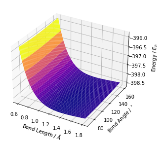
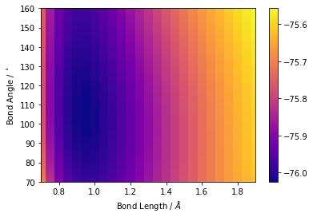
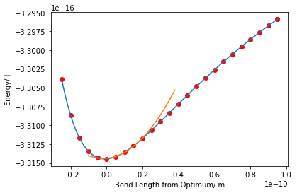
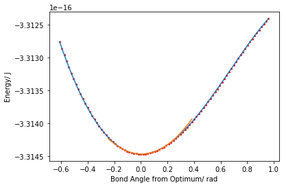
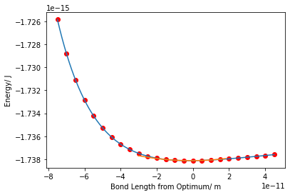
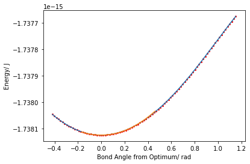

h2o_vals = {}
for filename in os.listdir(h2opath):
output = parse_out(os.path.join(h2opath, filename))
h2o_vals[output[0]] = output[1]Energy Surface
Plot potential energy surfaces and calculate freqencies for symmetric triatomics
parse_out
parse_out (file)
parses an out file of a symmetric triatomic for the bond length, angle and SCF energy
surface_plot
surface_plot (dict, fname=None)
Plots a surface from the output of the regex
surface_plot(h2s_vals)
heatmap
heatmap (dict, fname=None)
Plots a heatmap from the output of the regex
heatmap(h2o_vals)
vib_calc
vib_calc (dict, mass=1.6735575e-27, plot=False)
Calculate optimum bond length and angle and symmetric stretch and bending frequencies. Default mass is that of the hydrogen atom
Assuming around the equilibrium point, the relevant part of each polynomial is the quadratic, for the stretching frequency: \[E=E_{0}+\frac{1}{2}k_{r}(r-\bar{r})^{2}+\frac{1}{2}k_{\theta}(\theta-\bar{\theta})^{2}\] and thus \[F = -\nabla E=\begin{pmatrix}-k_{r}r\\-k_{\theta}\theta \end{pmatrix}\] and so \(\nu_{r} = \frac{1}{2\pi}\sqrt{\frac{k_{r}}{\mu_{1}}}\) and \(\nu_{\theta} = \frac{1}{2\pi}\sqrt{\frac{k_{\theta}}{r^{2}\mu_{2}}}\), where \(\mu_{1}\approx 2 m_{u}\) and \(\mu_{2}\approx 0.5 m_{u}\). For both water and hydrogen disulfide \(m_{u}\) is the mass of the hydrogen atom
r_opt, theta_opt, nu_r, nu_theta = vib_calc(h2o_vals, plot= True)
print('the optimum bond length of water is ', r_opt, ' angstroms with angle ', theta_opt, ' degrees' )
print('the stretching frequency ', round(nu_r), ' cm-1 and bending frequency ', round(nu_theta), ' cm-1' )

the optimum bond length of water is 0.95 angstroms with angle 105.0 degrees
the stretching frequency 3113 cm-1 and bending frequency 1665 cm-1Similarly for hydrogen sulfide
r_opt, theta_opt, nu_r, nu_theta = vib_calc(h2s_vals, plot= True)
print('the optimum bond length of hydrogen sulfide is ', r_opt, ' angstroms with angle ', theta_opt, ' degrees' )
print('the stretching frequency ', round(nu_r), ' cm-1 and bending frequency ', round(nu_theta), ' cm-1' )

the optimum bond length of hydrogen sulfide is 1.35 angstroms with angle 94.0 degrees
the stretching frequency 2922 cm-1 and bending frequency 1255 cm-1